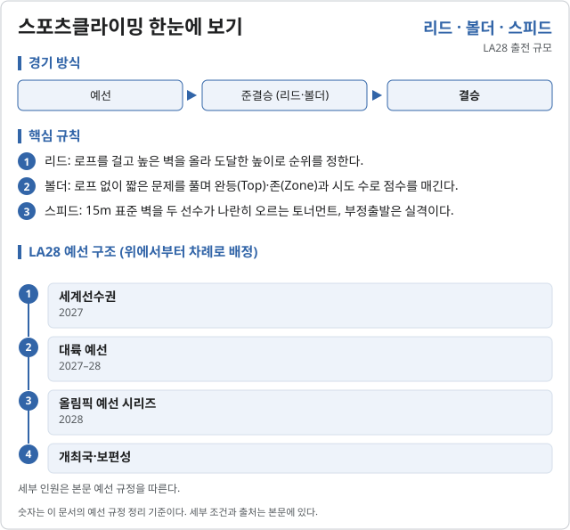
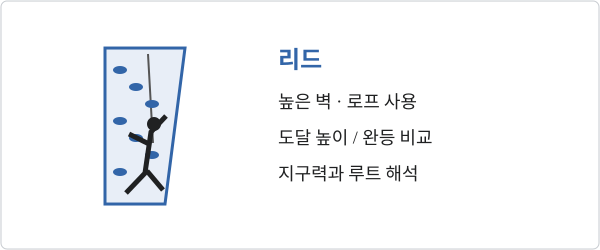
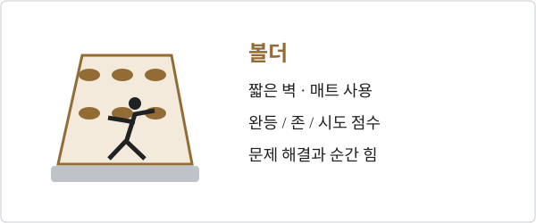
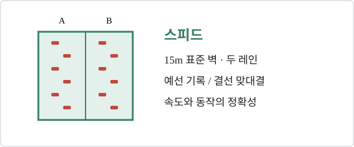

스포츠클라이밍 (Sport climbing)

2026 주요 대회 결과 2026-11-07 10:09 KST
위키백과 대회 문서에서 자동으로 모은다. 대회 중에는 한 시간마다 새로 읽는다. 한국 선수가 있는 줄은 붉게 칠했다. 하계 실시간 전체 →
아이치·나고야 아시안게임 아이치·나고야 · 09.29~10.03 종료 결과 6/6종목 · 한국 금1 은1 동3
| 종목 | 금 | 은 | 동 |
|---|---|---|---|
| 남자 events | |||
| Boulder | |||
| Lead | |||
| Speed | |||
| 여자 events | |||
| Boulder | |||
| Lead | |||
| Speed | |||
메달 순위:  일본 2-3-1 ·
일본 2-3-1 ·  중국 2-1-1 ·
중국 2-1-1 ·  대한민국 1-1-3 ·
대한민국 1-1-3 ·  인도네시아 1-0-0 ·
인도네시아 1-0-0 ·  이란 0-1-0 ·
이란 0-1-0 ·  카자흐스탄 0-0-1
카자흐스탄 0-0-1
출처: 위키백과 Sport climbing at the 2026 Asian Games · 2026-11-06 22:37 읽음
예선 규정
세 종목의 경기 방식
리드

높은 벽의 한 루트를 올라 도달 높이로 순위를 가린다. 로프를 사용하며, 완등 여부와 홀드 도달 기록이 핵심이다.
볼더

짧은 벽의 여러 문제를 풀어 완등·존과 시도에 따른 점수로 순위를 가린다. 로프 없이 매트 위에서 경기를 치른다.
스피드

같은 15m 표준 벽을 빠르게 오른다. 예선 기록으로 토너먼트에 진입하고, 결선에서는 두 선수가 나란히 승부한다.
예선 일정
| 기간 | 대회 | 장소 | 배정 쿼터 | 결과 |
|---|
직전 올림픽 메달리스트
2024 파리 올림픽
| 세부종목 | 금 | 은 | 동 |
|---|---|---|---|
| 남자 콤바인 (볼더·리드) | Toby Roberts (GBR) | Sorato Anraku (JPN) | Jakob Schubert (AUT) |
| 남자 볼더 | 신설 | ||
| 남자 리드 | 신설 | ||
| 남자 스피드 | Veddriq Leonardo (INA) | Wu Peng (CHN) | Sam Watson (USA) |
| 여자 콤바인 (볼더·리드) | Janja Garnbret (SLO) | Brooke Raboutou (USA) | Jessica Pilz (AUT) |
| 여자 볼더 | 신설 | ||
| 여자 리드 | 신설 | ||
| 여자 스피드 | Aleksandra Mirosław (POL) | Deng Lijuan (CHN) | Aleksandra Kałucka (POL) |
링크 없는 행은 LA28에 없는 파리 2024 세부종목이다. 출처: Wikipedia 각 종목 2024 하계 올림픽 메달 표.
대한민국
주요 선수
쿼터 확보 현황
| 세부종목 | 확보 인원 | 상태 | 획득 대회 |
|---|